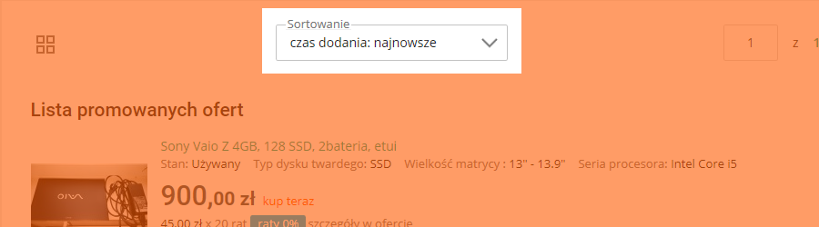
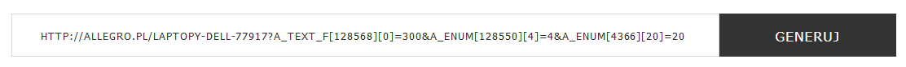
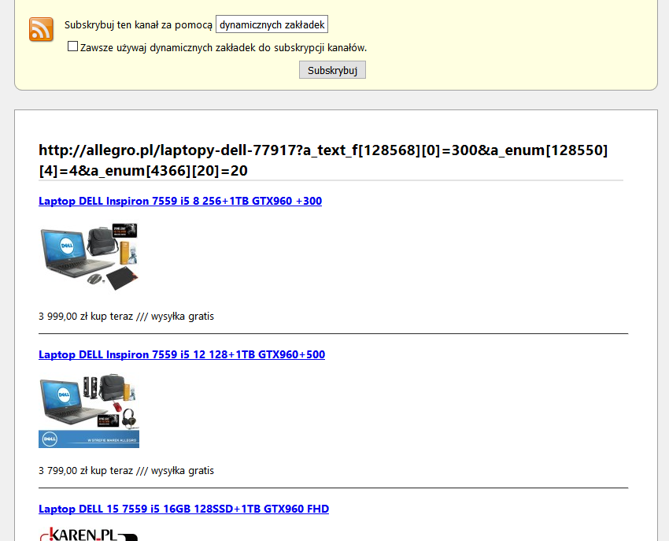

Co to jest?
Allegro RSS jest generatorem kanału RSS, który w porównaniu do standardowego generatora Allegro, pozwala również na spersonalizowanie wszystkich parametrów wyszukiwania.
Jak stworzyć kanał RSS?
- Wejdź w wybraną przez Ciebie kategorię na stronie allegro.pl i ustaw parametry wyszukiwania.

- Przekopiuj link z pola adresu WWW przeglądarki, w którym będą umieszczone parametry wyszukiwania. 
- Wprowadź adres do wskazanego pola na tej stronie internetowej i naciśnij przycisk "Generuj". 
- Zostanie wygenerowany kanał RSS z aukcjami o podanych parametrach wyszukiwaniach, jak w podanym adresie do serwisie Allegro. 